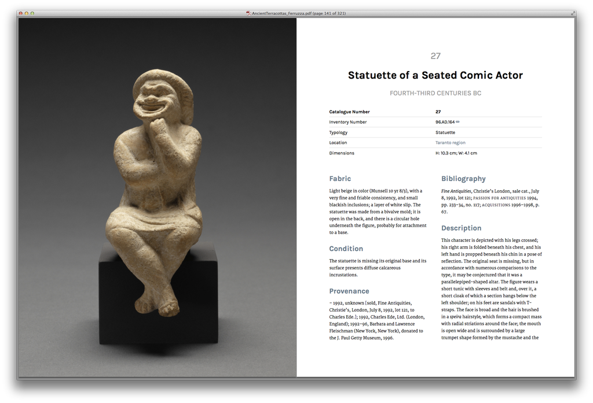

 Sample book spread – no InDesign required!
Overview
At the Getty, I'm building a platform (working title: Octavo) for publishing digital art books. The goal is to generate multiple book formats (web, PDF, EPUB, print on demand) from a single set of text files. The backbone of the project is the Middleman static site generator.
Middleman handles the web-based version of the book out of the box. In order to create the alternate formats, I knew that I'd need to write an extension.
I had always assumed that writing an extension for Middleman would be fairly complicated, but the process was surprisingly straight-forward and only took a few hours. This extension is a short program that does the following:
- Creates an alternate version of site pages that rely heaviliy on interactive elements, replacing them with content that will translate well into print.
- Organizes all content for the print version of the website into a list, while preserving the desired order of pages
- Feeds that list to the Prince PDF generator to convert a single PDF.
Development Process
Middleman's extension documentation includes discussion of several different
callbacks—places where you can hook into the build process to run custom
code. I wasn't sure what actions needed to go where, so I relied on
good-old trial and error to get a sense of which methods and objects were available
at any given moment in the program's lifecycle. The middleman console command
was invaluable. Some points worth remembering:
-
Many of the methods accessible in a
config.rbfile can be called via anappvariable after an extension has been initialized. For example, theproxymethod is available asapp.proxy. Site-widedataobjects are also available in theafter_configurationcallback and onward.# extensions/your_extension.rb # app is an instance of Middleman::Application # app.data represents the site-wide data-store object. # The contents of all data files under data/catalogue are passed to a private # method in order to generate print-specific pages for this content. def after_configuration pdf_proxy(app.data.catalogue) end # ... # Note the need to call app.proxy here; this is the same as # calling self.proxy inside of config.rb private def pdf_proxy(collection) collection.each do |cat, entry| app.proxy "/print-catalogue/#{cat}.html", options.print_template, :locals => { :entry => entry }, :ignore => true end end -
The
sitemapis a very powerful tool. One pattern which I kept re-using was this one:resources.find_all { |p| p.some_filter_criteria }By passing a code block to the
find_allmethod here, you can create a test for virtually anything; the results will be a collection of all elements which passed the test. The otherEnumerablemethods likesort_by,select, etc. can also be used here.
Requirements
This extension assumes the Prince PDF generator is
being used (it has the best output of any command-line tool by far). However,
you could swap out the command in the after_build callback to use any other
program which can take a list of files as input.
Creating a good print stylesheet is also highly recommended.
Usage
First, you must require the extension in config.rb. Default place for it to
live is in extensions/. Then, define a template for the printed versions of
any dynamic pages (this setup assumes that dynamic pages are being used, and
that the data lives in data/catalogue/). Using a separate template means
that interactive elements can be replaced with things that make sense in a
printed format (plain img elements instead of dynamic JS-enhanced versions, etc).
The extension will automatically run when the middleman build command is given,
and a PDF will appear in the /pdf folder when generation is complete.
Next Steps
This is a basic (but working) implementation of an automatic web-to-PDF conversion. While this works, a lot of custom code for templates and styling was still needed in order to get decent output. My ultimate goal is to simplify the interface and provide some good defaults, and then package the end result as a gem. That way, you could just add it to your Gemfile and add a few lines of configuration and the rest would be handled automatically.
This is something I’m hoping to include as part of our Octavo platform for digital publishing at some point in 2016.
Questions? Suggestions? Let me know on twitter!